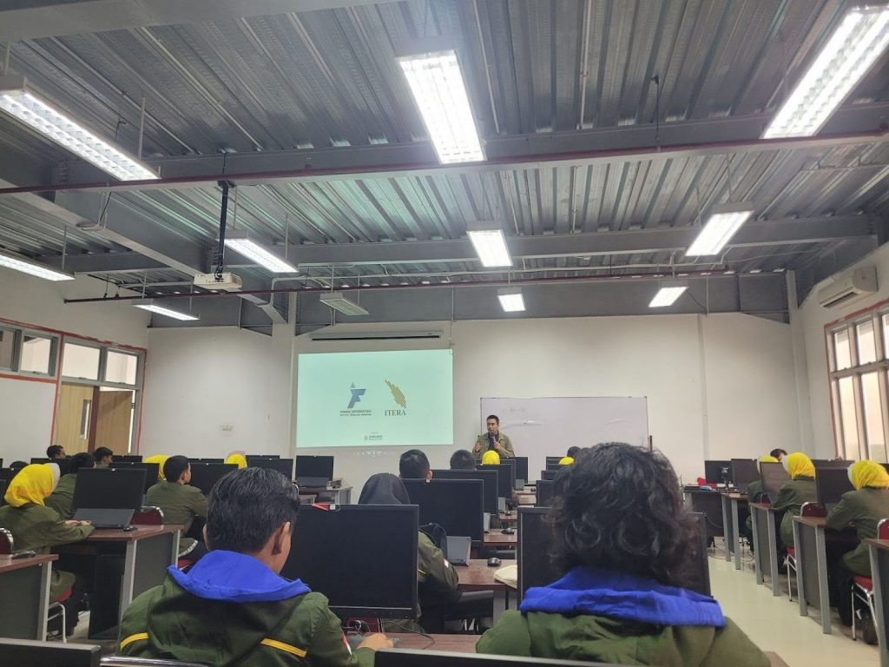

Mahasiswa Teknik Informatika ITERA Mendalami Konsep HTML Semantik dan Standar W3C
Dipublikasikan oleh: Tim Redaksi ITERA News | Tanggal: | Kategori: Akademik & Teknologi

Pentingnya Pondasi Dasar Struktur Web
LAMPUNG SELATAN — Program Studi Teknik Informatika Institut Teknologi Sumatera (ITERA) menyelenggarakan perkuliahan tatap muka untuk mata kuliah Pengembangan Aplikasi Web pertemauan ke-2[cite: 1]. Pada sesi ini, fokus materi diarahkan pada pemahaman sintaks dasar HTML, struktur dokumen, hingga implementasi elemen semantik secara menyeluruh[cite: 1].
Dosen pengampu menekankan bahwa sebelum memasuki ranah desain dengan CSS maupun logika interaktif menggunakan JavaScript, mahasiswa harus menguasai "kerangka dasar" (HTML as the skeleton) dari sebuah aplikasi web terlebih dahulu[cite: 1].
Mengapa Menggunakan HTML Semantik?
Dalam perkuliahan dijelaskan bahwa penggunaan tag semantik seperti <header>, <nav>, <main>, <article>, dan <footer> memberikan makna logis terhadap dokumen HTML[cite: 1]. Berbeda dengan tag generik seperti <div> yang tidak memiliki arti struktural khusus[cite: 1].
Beberapa keunggulan utama dari HTML Semantik antara lain:
- Meningkatkan Aksesibilitas (WCAG): Memudahkan perangkat bantu (*screen reader*) yang digunakan oleh penyandang disabilitas untuk membaca urutan konten dengan benar[cite: 1].
- Optimasi Mesin Pencari (SEO): Mesin pencari seperti Google dapat memahami hierarki informasi pada halaman web secara lebih presisi[cite: 1].
- Kemudahan Maintenance: Struktur kode menjadi jauh lebih rapi, mudah dibaca, dan mudah dirawat oleh tim pengembang aplikasi di kemudian hari[cite: 1].
Validasi Standar dan Publikasi Aplikasi Web
Selain penulisan kode, mahasiswa juga diwajibkan melakukan validasi menggunakan W3C Validator untuk memastikan tidak ada kesalahan pembukaan/penutupan tag maupun kesalahan sintaksis lainnya[cite: 1]. Sebagai penutup praktikum, setiap mahasiswa diminta mempublikasikan hasil karyanya secara langsung melalui layanan GitHub Pages[cite: 1].
Diharapkan melalui tugas praktikum ini, mahasiswa Teknik Informatika ITERA mampu menghasilkan produk web yang tidak hanya menarik secara visual kelak, tetapi juga patuh pada standar teknologi web internasional[cite: 1].